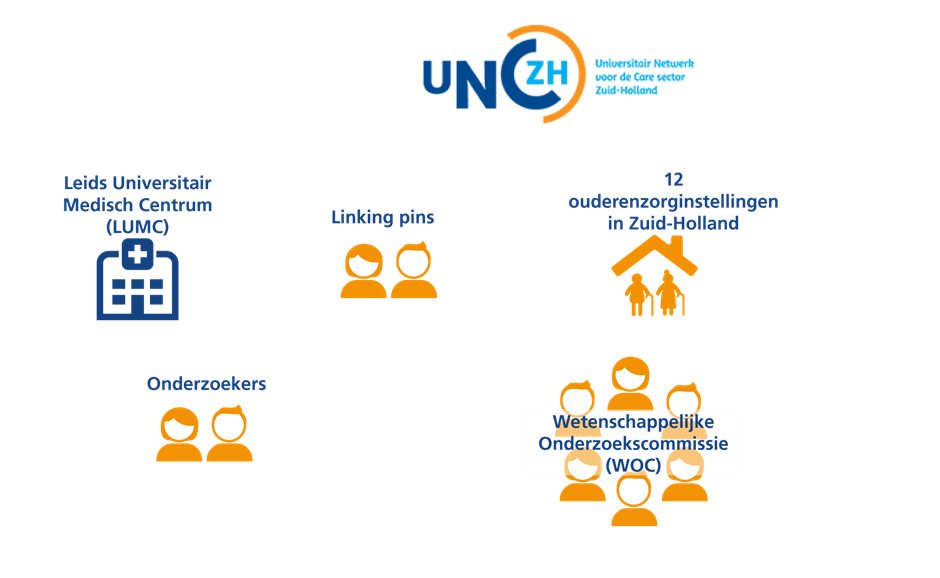
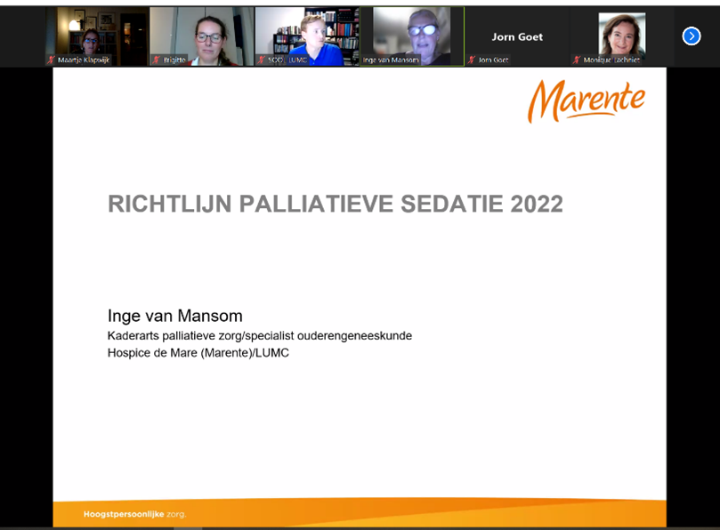

prof. dr. Jacobijn Gussekloo, huisarts; prof. dr. Wilco Achterberg, specialist
ouderengeneeskunde; prof. dr. Simon Mooijaart, internist-ouderengeneeskunde LUMC
Een academisch medisch centrum heeft een aantal hoofdtaken: patiëntenzorg, onderzoek, onderwijs en nascholing. Als het gaat over ouderen, zijn er in het LUMC verschillende medische disciplines bij betrokken, waaronder huisarts, specialist ouderengeneeskunde en internist-ouderengeneeskunde. Voor alle hoofdtaken is het voor ouderen heel belangrijk dat er geen muren tussen verschillende behandelaren staan, en dat er goed interprofessioneel wordt samengewerkt. Binnen het LUMC is dan ook besloten om die samenwerking tussen de verschillende disciplines, in co-relatie met ouderen zelf, te intensiveren. We hebben daartoe het LUMC Centrum voor Ouderengeneeskunde (LCO) opgericht: iedereen met hart voor ouderen bij elkaar.
We zijn erg blij met dit initiatief, en we plukken daar nu ook al de vruchten van. Zo organiseren we onze Leidse ouderengeneeskunde dagen nascholing al jaren samen, en doen we ook steeds meer aan interprofessioneel opleiden van onze AIOS met HAIO’s en internisten in opleiding. Ook doen we meer transmuraal onderzoek, met patiënten in het ziekenhuis die naar het verpleeghuis of naar huis gaan. Een hele belangrijke is ook het nieuwe basiscurriculum voor de geneeskundeopleiding. Gezamenlijk hebben we een Leerlijn Ouderen gemaakt, die we uitrollen om de arts van morgen beter voorbereid te laten zijn op een carrière met daarin veel en goede contacten met ouderen.
We zien dat we als verschillende disciplines elkaar erg respecteren, en omdat we elkaar meer ontmoeten ook elkaar beter begrijpen, en weten te vinden. En dat is goed voor de student, voor de oudere, maar ook voor ons: het maakt ons werk leukerüòä
Kennisontwikkeling in de ouderenzorg
Ook masterstudenten Vitality & Ageing van het LUMC doen onderzoek in het UNC-ZH. De opleidingen en het netwerk bieden samen een mooi platform voor kennisontwikkeling in de ouderenzorg. Om nog meer uitwisseling met het onderwijs te bewerkstelligen zijn we een samenwerkingsverband aangegaan met Vitale Delta (4 hogescholen) en met Hogeschool Utrecht (op geriatrische revalidatie). Op fysiotherapie is sinds een aantal jaar een duurzame samenwerking tot stand gekomen voor studenten van de Hogeschool Leiden. Daarnaast zijn er constructieve contacten voor het mbo-onderwijs.
Een sterke samenwerking in de ouderenzorg
Het Universitair Netwerk voor de Care sector Zuid-Holland (UNC-ZH) bestaat sinds 2005. Dit netwerk is een samenwerkingsverband tussen de afdeling Public Health en Eerstelijnsgeneeskunde (PHEG) van het Leids Universitair Medisch Centrum (LUMC) en twaalf grote zorgorganisaties in Zuid-Holland. Alle deelnemers van het netwerk zetten zich in voor wetenschappelijk onderzoek om zo de ouderenzorg te kunnen verbeteren. Er zijn nog vijf academische netwerken in ouderenzorg, hiermee is continue samenwerking en kennisuitwisseling op verschillende niveaus en thema’s.
Speerpunten van onderzoek
De speerpunten van onderzoek binnen ons netwerk zijn: geriatrische revalidatie, kwaliteit van leven bij dementie en palliatieve zorg bij dementie. Overkoepelend hebben we het thema cliëntparticipatie en interprofessioneel samenwerken. Door het gezamenlijk uitvoeren van wetenschappelijk onderzoek op deze speerpunten vindt structurele verbinding plaats tussen wetenschap en praktijk. De onderzoeken sluiten zoveel mogelijk aan bij de wensen en behoeften van verpleeghuisbewoners, door hen zelf en cliëntenraden actief te betrekken. Binnen onze speerpunten lopen verschillende onderzoeken die te vinden zijn op onze website
De verbinding met AGE
De thema’s van het UNC-ZH sluiten binnen het LUMC aan bij de Academische werkplaats voor Geriatrie in de Eerstelijn en langdurige Zorg (AGE). Deze werkplaats voor geriatrie is onderdeel van de afdeling Public Health en Eerstelijnsgeneeskunde (PHEG) van het LUMC. Het doel van het onderzoeksprogramma van AGE is het verbeteren van (de organisatie) van medische zorg aan ouderen, gebaseerd op wetenschappelijke kennis en evidentie. Het UNC-ZH draagt hieraan bij door de zorgpraktijk, het onderzoek en onderwijs en nascholing zo veel mogelijk te integreren.
Motor tot verbinding
Het LUMC heeft in de ouderenzorg o.a. als missie om zorg, onderzoek en onderwijs/opleiding en nascholing te verbinden. De afdeling PHEG heeft het voordeel dat voor de huisarts- en specialist ouderengeneeskunde onderzoek, opleiding, nascholing en onderwijs heel dicht bij elkaar is georganiseerd. Daarnaast is ook landelijke NHG-kaderopleiding eerstelijns ouderengeneeskunde voor huisartsen en specialisten ouderengeneeskunde aan de afdeling PHEG verbonden.
Het universitair Netwerk voor de Care sector Zuid-Holland (UNC-ZH):
onderzoeksnetwerk in de ouderenzorg
Eveline Korving
Bij de opleiding tot Specialisme Ouderengeneeskunde in Leiden kun je je opleiding combineren met het doen van wetenschappelijk onderzoek. Hierin ligt een belangrijke samenwerking voor SOOL met het UNC-ZH. Veel van deze onderzoeken worden uitgevoerd in het UNC-ZH: artsen in opleiding tot onderzoeker (aioto’s) doen hun onderzoek in de zorgorganisaties uit het netwerk.
UNC-ZH in 2022: Kennis maken als kerntaak
Onze slogan is: Samen kennis maken, delen en toepassen. Dit heeft betrekking op onze drie kerntaken: het ontwikkelen van nieuwe kennis, deze kennis delen met wetenschap en praktijk en tools aanbieden om de kennis in de praktijk toe te passen.
De kennisontwikkeling – het onderzoek doen – is hierin onze basis. Wetenschappelijk onderzoek in samenwerking met de praktijk om de ouderenzorg te verbeteren. In 2022 stond deze basis als een huis: 31 onderzoeken, 3 promotietrajecten afgerond en nieuwe onderzoeken gestart. Om zo de zorg voor ouderen steeds meer ‘evidence based’ te maken: bewezen wat (beter) werkt en niet werkt.
Voorbeelden van onderzoek door aioto’s
Verschillende artsen in opleiding volgen dit aioto-traject en doen hun onderzoek in ons netwerk. Daarbij krijgen zij ook onderzoeksbegeleiding vanuit de staf van het netwerk. Bekijk bijvoorbeeld de onderzoeken die in 2022 ook liepen:
Annelore van Dalen-Kok –PAIC onderzoek - promotie 31 maart 2022
Kennisontwikkeling in de ouderenzorg
Ook masterstudenten Vitality & Ageing van het LUMC doen onderzoek in het UNC-ZH. In 2022 waren er ook drie bezoeken aan lidorganisaties van het UNC-ZH. De opleidingen en het netwerk bieden samen een mooi platform voor kennisontwikkeling in de ouderenzorg. Om nog meer uitwisseling met het onderwijs te bewerkstelligen zijn we een samenwerkingsverband aangegaan met Vitale Delta (4 hogescholen) en met Hogeschool Utrecht (op geriatrische revalidatie). Op fysiotherapie is sinds een aantal jaar een duurzame samenwerking tot stand gekomen voor studenten van de Hogeschool Leiden. Daarnaast zijn er constructieve contacten voor het mbo-onderwijs.
Een sterke samenwerking in de ouderenzorg
Het Universitair Netwerk voor de Care sector Zuid-Holland (UNC-ZH) bestaat sinds 2005. Dit netwerk is een samenwerkingsverband tussen de afdeling Public Health en Eerstelijnsgeneeskunde (PHEG) van het Leids Universitair Medisch Centrum (LUMC) en twaalf grote zorgorganisaties in Zuid-Holland. Alle deelnemers van het netwerk zetten zich in voor wetenschappelijk onderzoek om zo de ouderenzorg te kunnen verbeteren. Er zijn nog vijf academische netwerken in ouderenzorg [ https://academischeouderenzorg.nl/], hiermee is continue samenwerking en kennisuitwisseling op verschillende niveaus en thema’s.
Speerpunten van onderzoek
De speerpunten van onderzoek binnen ons netwerk zijn: geriatrische revalidatie, kwaliteit van leven bij dementie en palliatieve zorg bij dementie. Overkoepelend hebben we het thema cliëntparticipatie en interprofessioneel samenwerken. Door het gezamenlijk uitvoeren van wetenschappelijk onderzoek op deze speerpunten vindt structurele verbinding plaats tussen wetenschap en praktijk. De onderzoeken sluiten zoveel mogelijk aan bij de wensen en behoeften van verpleeghuisbewoners, door hen zelf en cliëntenraden actief te betrekken. Binnen onze speerpunten lopen verschillende onderzoeken. Onze onderzoeken zijn tijdelijk te vinden op de LUMC-website door te zoeken op UNC-ZH of de naam of onderwerp van het onderzoek. In de eerste helft van 2023 volgt een nieuwe website.
De verbinding met AGE
De thema’s van het UNC-ZH sluiten binnen het LUMC aan bij de Academische werkplaats voor Geriatrie in de Eerstelijn en langdurige Zorg (AGE). Deze werkplaats voor geriatrie is onderdeel van de afdeling Public Health en Eerstelijnsgeneeskunde (PHEG) van het LUMC. Het doel van het onderzoeksprogramma van AGE is het verbeteren van (de organisatie) van medische zorg aan ouderen, gebaseerd op wetenschappelijke kennis en evidentie. Het UNC-ZH draagt hieraan bij door de zorgpraktijk, het onderzoek en onderwijs en nascholing zo veel mogelijk te integreren.
Motor tot verbinding
Het LUMC heeft in de ouderenzorg o.a. als missie om zorg, onderzoek en onderwijs/opleiding en nascholing te verbinden. De afdeling PHEG heeft het voordeel dat voor de huisarts- en specialist ouderengeneeskunde onderzoek, opleiding, nascholing en onderwijs heel dicht bij elkaar is georganiseerd. Daarnaast zijn zowel de landelijke NHG-kaderopleiding ouderenzorg voor huisartsen en de landelijke kaderopleiding specialist ouderengeneeskunde in de eerste lijn beide aan de afdeling PHEG verbonden. Deze kaderopleidingen hebben een uitstekende samenwerking, zo zijn er bijvoorbeeld regelmatig gezamenlijke terugkomdagen.

Vitaliteit in een verouderende populatie
prof. dr. David van Bodegom, Leyden Academy on Vitality and Ageing
Toen Eos, de godin van de dageraad, aan Zeus vroeg om haar beeldschone maar sterfelijke echtgenoot Tithonus het eeuwige leven te schenken vergat ze iets belangrijks. Ze vergat hem te vragen om haar echtgenoot ook de eeuwige jeugd te schenken. Naarmate Tithonus ouder werd, takelde hij steeds verder af. Zijn ledematen verschrompelden en zijn stem kon uiteindelijk enkel nog lispelen. Uit piëteit veranderde Zeus hem in een krekel.
Wij leven in een verouderende populatie. Niet alleen stijgt de proportie van ouderen in de populatie, ook bereiken steeds meer mensen een steeds hogere leeftijd. Maar wij zijn gelijk Tithonus. Wij hebben wel lange levens gekregen, maar niet de eeuwige jeugd. Ouderdomsklachten en ouderdomsziekten zijn de realiteit. Meer dan een miljoen mensen in ons land hebben diabetes type 2, ouderdomssuiker. Meer dan de helft heeft overgewicht. Hart- en vaatziekten vormen nog steeds een van onze voornaamste doodsoorzaken. Dat klinkt als normale veroudering, maar is dat normaal?
Natuurlijk treedt tijdens het leven slijtage op, daar kan niemand aan ontsnappen. En iemand kan ook pech hebben, zelfs al op jongere leeftijd. Maar het idee dat er niets te doen is aan verouderingsziekten is onjuist. Wij noemen deze aandoeningen ouderdomsziekten omdat het ziekten zijn waarbij een cumulatief proces uiteindelijk resulteert in ziekte. Daar is tijd voor nodig, en daarom zien we deze ziekten zich pas op hogere leeftijd manifesteren. De snelheid waarmee en de manier waarop wij ouder worden wordt echter voor een groot deel bepaald door onze leefstijl en leefomgeving.
In het toonaangevende medische tijdschrift The Lancet werd 25 jaar geleden al berekend dat wereldwijd 90 procent van de hartinfarcten bij mannen en 94 procent van de hartinfarcten bij vrouwen te voorkomen zijn door negen beïnvloedbare risicofactoren. De overgrote meerderheid van deze risicofactoren zijn leefstijlfactoren. Ook laten studies zien dat minstens 80 procent van de gevallen van ouderdomssuiker voorkomen kunnen worden met een gezonde leefstijl. In de laatste jaren is zelfs onomstotelijk vast komen te staan dat een groot deel van de mensen met beginnende suikerziekte de ziekte in remissie kunnen brengen door hun leefstijl om te gooien. Zelfs voor een ziekte als dementie wordt steeds duidelijker dat een gezonde leefstijl tot wel 40 procent van de gevallen kan helpen voorkomen. Alles bij elkaar wegende kan gesteld worden dat op populatieniveau vele gezonde jaren aan het leven toegevoegd kunnen worden. Dat is geen eeuwige jeugd. Maar het is eeuwig zonde dat wij deze enorme potentiële gezondheidswinst momenteel onbenut laten, als populatie maar ook als medische professionals.
Het is goed dat we steeds meer samenwerken in Leiden met alle disciplines die zich met veroudering bezig houden: de 2e lijn, 1e lijn maar ook de “ 0e ” lijn van vitaliteit en preventie en de Leyden Academy on Vitality and Ageing. Op deze manier kunnen we in Leiden een voorloper blijven, niet alleen als het gaat om behandelen en langer leven maar juist ook in het toevoegen van gezonde jaren aan het leven.
Sinds haar oprichting voldoet de jaarlijks startende en 2 jaar durende kaderopleiding ouderengeneeskunde aan de vraag van aanvankelijk alleen huisartsen (2007) en later ook Specialisten Ouderengeneeskunde (2012) om zich verder te kunnen bekwamen in het organiseren en leveren van hoogwaardige eerstelijnszorg voor ouderen. Aanvankelijk waren het twee afzonderlijke opleidingen die sinds enkele jaren volledig samengevoegd zijn in de Kaderopleiding Geïntegreerde Eerstelijns Ouderengeneeskunde.
Het leuke van het proces van publicatie is dat je wordt uitgedaagd om nog dieper in te gaan op je klinische vraagstuk en met behulp van de feedback van de referenten van het desbetreffende tijdschrift je de onderzochte studies en je artikel nog kritischer gaat benaderen. Voor mij was stap 1 om met mijn wetenschap mentor mijn artikel te bespreken en te bepalen of het geschikt was voor publicatie; Is het een relevant onderwerp, heb ik een duidelijke en goed geformuleerde vraagstelling, komt de empirische cyclus goed naar voren, zijn de resultaten duidelijk beschreven en weergegeven en, vanzelfsprekend, is het artikel goed geschreven en leuk voor collega’s om te lezen? Na het akkoord van mijn mentor was de volgende stap snel gezet, contact zoeken met de redactie en aan de hand van de aanleverspecificaties de eerste versie indienen. Je artikel wordt vervolgens aan de redactie ter goedkeuring en beoordeling voorgelegd, waarna een eerste ronde en evt. een tweede ronde van feedback volgt.
Het een leerzame uitdaging met uiteindelijk een goed resultaat, in de November editie van 2021 is mijn artikel gepubliceerd. Een publicatie is opzichzelfstaand al een mooie beloning, maar daarnaast geeft het je ook een vrijstelling voor een van de volgende CAT’s, toch een mooie bijverdienste. De moraal van dit verhaal, bespreek dus als aios vooral de mogelijkheid van het publiceren van je CAT met je wetenschapsmentor en ga de uitdaging aan!
Wetenschapsavonden ouderengeneeskunde
dr. Maartje Klapwijk, specialist ouderengeneeskunde
Wetenschapsavond Ouderengeneeskunde
Er is het hele jaar de eerste donderdag van de maand door het opleidingsinstituut specialisme ouderengeneeskunde en PHEG-AGE van het LUMC een nascholing georganiseerd. Het afgelopen jaar was bewust gekozen voor het online continueren van de wetenschapsavonden, mede door de hoge opkomst bij de digitale versies. Juist omdat er tijdens deze nascholingsavonden, die al sinds 2014 plaatsvinden, veel ruimte is voor interactie tussen specialisten ouderengeneeskunde en huisartsen (en zij die daarvoor in opleiding zijn) en leden van het Universitair Netwerk voor de Care sector Zuid-Holland (UNC-ZH) is dit voort gezet via de digitale versie via Zoom. Die kon alleen gevolgd worden na aanmelding via het secretariaat van het Specialisme Ouderengeneeskunde Opleiding Leiden (SOOL).
Opening; Opleiding en UNC-ZH
De eerste donderdag is ook de ‘terugkomdag’ van perifere opleiders, zodat meteen
hierna om 17.00 uur gestart kan worden met mededelingen vanuit het opleidingsinstituut en vanuit het UNC-ZH.
Voordrachten
Voor de digitale versie is gekozen voor twee plenaire voordrachten van elk twintig minuten met tien minuten om met elkaar in discussie te gaan en kennis te delen en over verschillende actuele ouderengeneeskundige onderwerpen. Hierna was er een pauze van 15 minuten. Daarna waren er 3 plenaire voordrachten. Van de vijf plenaire voordrachten, worden er in principe drie verzorgd door aios ouderengeneeskunde en twee door medisch specialisten uit binnen- en buitenland. Alle voordrachten zijn nadrukkelijk gericht op de toepasbaarheid in de praktijk en Evidence Based Medicine. Ook bij de online versie is er een onderbreking in het programma zodat de deelnemers even pauze hebben.
Onderwerpen
De opkomst op deze avonden was erg goed, steeds rond de 35 tot 50 deelnemers. Een aantal relevante onderwerpen en titels van presentaties in 2022 waren onder andere:
Death rattle of een reuteltje?
Mictieklachten bij de ziekte van Parkinson
Herziening richtlijn palliatieve sedatie
Als bewoners vallen, FRAIL HIP studie
Euthanasie bij gevorderde dementie, complex?
Cognitieve achteruitgang voor en na een CVA
Invloed van sociale isolatie als gevolg van COVID-19 pandemie op personen met dementie, naasten en zorgmedewerkers
Reflectie op de ethische aspecten van preventieve coronamaatregelen in het verpleeghuis

Accreditatiepunten
De wetenschapsavond bleek weer een uitermate geschikt platform voor het uitwisselen van recente en wetenswaardige wetenschappelijke kennis binnen de ouderengeneeskunde, het communiceren van nieuws uit het UCN-ZH, het versterken van de banden met opleiders, specialisten ouderengeneeskunde en huisartsen in de regio. Deze wetenschapsavonden per jaar zijn voor elke bijeenkomst voor twee uur geaccrediteerd voor huisartsen en specialisten ouderengeneeskunde en aan deelname zijn geen kosten verbonden. Wel is het vriendelijke verzoek om het evaluatie formulier in te vullen en naar het secretariaat te mailen na afloop van de wetenschapsvond.
Aanmelden
In verband met de accreditatie is aanmelden essentieel, inschrijven is ook in 2023 weer mogelijk via het secretariaat van de opleiding specialisme ouderengeneeskunde: sool@lumc.nl.
Indien u het op prijs stelt uitnodigingen voor de wetenschapsavond te ontvangen, kunt zich hiervoor eveneens aanmelden via sool@lumc.nl.